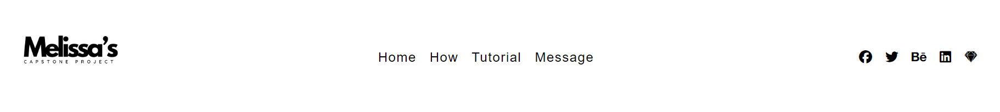

HOW IT FUNCTIONS
Desktop
At desktop size, the webpage showcases the logo, navigation links, and social media buttons horizontally across the header.
Mobile Design
As the webpage is scaled down, a responsive navigation design comes into play. At the smallest media query, the social icons are hidden entirely, and the navigation links are condensed into a .

The Outcome
This approach ensures a seamless transition from mobile to desktop, optimizing user experience across all devices.